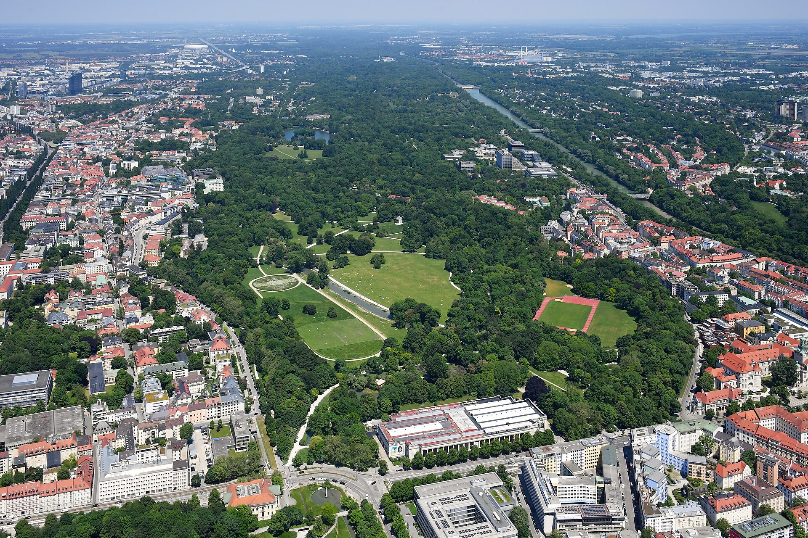

You probably heard about this before. But...
The Englischer Garten is bigger than Central Park New York (368 hectares), it was created in 1789 as a royal garden for Charles Theodore, Elector of Bavaria, it has the Chinese Pagoda, Japanese Teahouse, Monopteros, Eisbach Wave, Kleinhesseloher Lake and over 3 million visitors annually. You can go there 24/7 and walk over 100 bridges.
Back